|
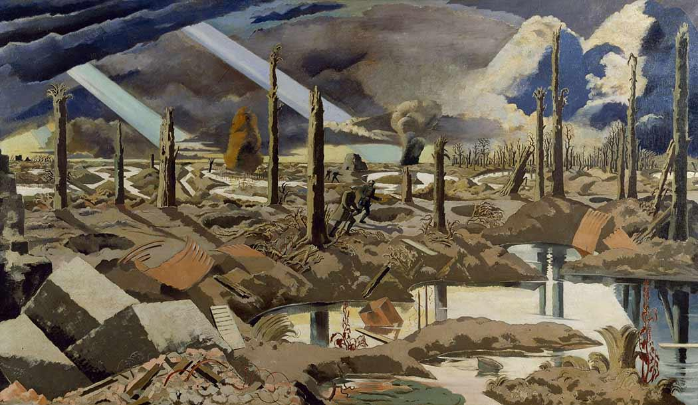 “The Menin Road” by Paul Nash, (1919) Considered one of the finest WWI paintings “DISPATCHES FROM THE FRONT” Now that you’ve seen, or will shortly, a preview of THE HUNDRED LAST DAYS: EVENTS LEADING UP TO 11/11/18 we hope you’ll join us daily on TDP’s Facebook page starting 4 August and running through 11 November for the daily report “Dispatches From the Front” on what was happening a hundred years ago. Besides the usual battle reports and war news we’ll have features, maps, charts, photos, paintings, poetry and lots more — all designed to commemorate the last hundred days before the Armistice. All this has two purposes: 1) To stimulate your memory and 2) to stimulate your curiosity. Note: Chronology is fixed but illustrations and some text may be from another period (e.g. In some cases I used illustrations, particularly paintings) from the 1914 battles on the Western Front to illustrate events in 1918. This drives home the point of how stupid it all was: Spending thousands of lives to take/defend a particular site in 1914 and then to repeat the battle four years later in reversed roles. And, I confess, in a few cases I placed an illustration in a spot just because there was a need for one. Things you will see: A focus on lesser-known people, places, and events. Some dead (?) wiki and other site links. Things you won’t see: Lots of photos of faces you know, so don’t look for Wilson, Clemenceau, Lloyd George and the rest of the usual celebrity names. They’ll get their turn later when we look at the Pacific Peace Conference next year — just in time for its centennial. Introducing Allan Seeger and the Nash Brothers (Paul and John): poets and painters in WWI were a big deal and these three represent some I consider significant. They may not be among the greatest or most famous, but they are certainly worthy of our consideration. THE BIG PICTURE A word on procedural format: the plan is to publish this project over a span of 100 days or so as a daily highlight on the TDP FB page. It may occasionally pop up elsewhere, but that is not guaranteed. Then, in November, the entire project will be published in toto, probably in that month’s TDP. Details on that later. In an unpublished, as yet, article comparing Napoleon and Pershing I discussed the twelve years of campaigns and battles that the Emperor waged across Europe. It’s those of the Sixth and Seventh Coalitions that are most comparable to WWI, but that’s a task we leave to you. WWI consisted of 11 campaigns, naval engagements, and air engagements. In one way or another we will mention all of them, but our main focus will be on the Western Front; and the following battles: 1914: 10; 1915, 5; 1916, 6; 1917, 7; 1918 — a total of 46. Here’s wiki’s list: see how many of them you can identify or know anything about. (Note: if you see the blue underlined text there’s an article in wiki on this battle.) 1914
1915
1916
1917
1918
Our primary interest is with the 18 battles of 1918, especially the nine battles in which the A.E.F. participated. THE HUNDRED LAST DAYS: EVENTS LEADING UP TO 11/11/18 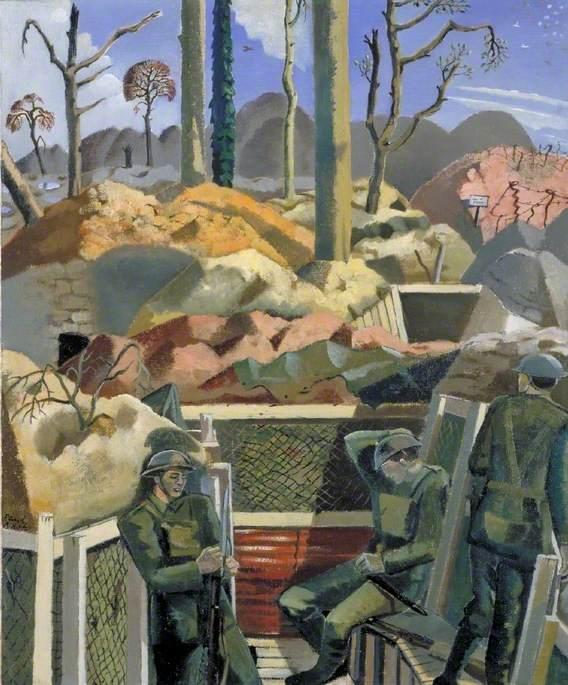 “Spring in the Trenches, Ridge Wood, 1917” by Paul Nash, (1918), Imperial War Museum “THE HUNDRED DAYS” 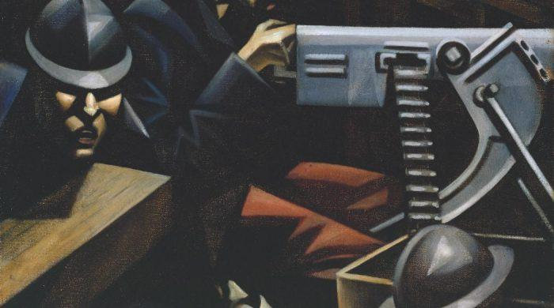 Title not known, by Percy Wyndham Lewis A lot can go right in a Hundred Days (FDR and Harry Truman) or a lot can go wrong (Need I remind you?): In this case they were mostly anti-climatic to what had happened before. Still…. SNEAK PREVIEW — JULY 4TH 1918 IN PARIS, FRANCE THE HUNDRED LAST DAYS: EVENTS LEADING UP TO 11/11/18 AMERICAN PARADE 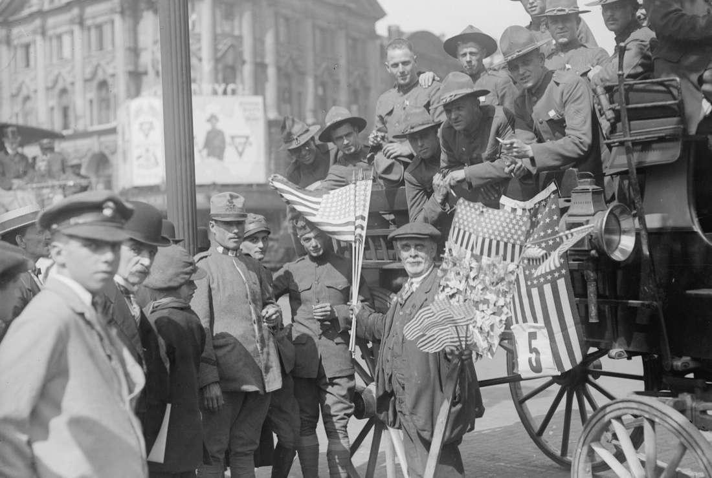 Americans marched, French cheered: No Doughboy left the parade without a loaf of fresh, hot French bread a bottle of wine, and a kiss or two! Nine months later a large number of unwed mothers suddenly began dropping babies. The Government took them as its own and each was given a code name such as George, Thomas, Benjamin, etc. (WWI myth). Same as was done with children fathered by FFL (including up to the Vietnam War era) and going back to Napoleon’s time. SNEAK PREVIEW — 14 JULY 1918 IN LYON, FRANCE THE HUNDRED LAST DAYS: EVENTS LEADING UP TO 11/11/18 BASTILLE DAY ATTACK 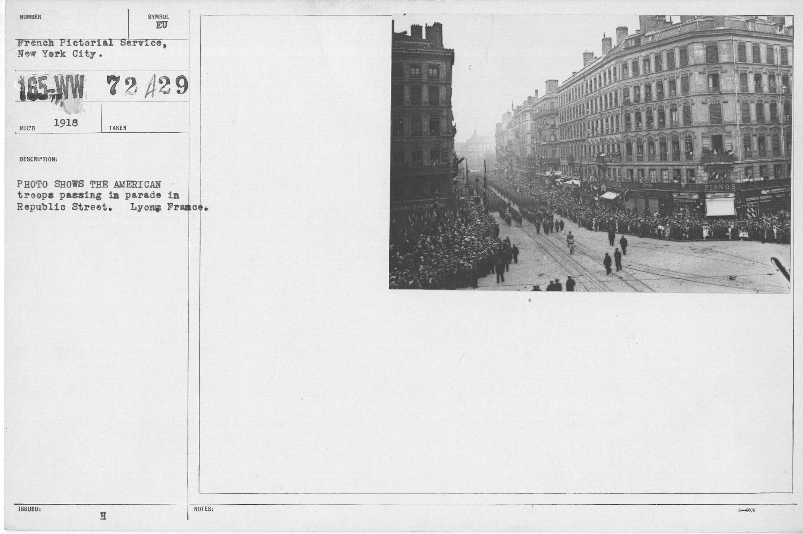 Photo shows the American troops passing in parade in Republic Street Ludendorff’s plan to launch a massive surprise attack on the French Army east of Reims the morning after Bastille Day fails when Allies learn of the attack just before it starts, stay sober that night, and are waiting for the Huns’ artillery barrage and infantry attack the next morning. 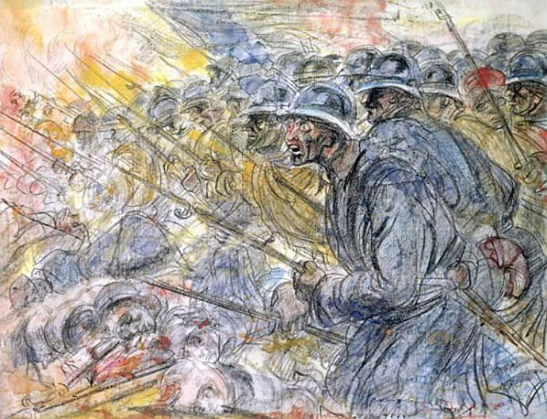 The Assault Verdun (c.1918) by Henry de Groux, one of France’s finest WWI painters. SNEAK PREVIEW — 15 JULY THE HUNDRED LAST DAYS: EVENTS LEADING UP TO 11/11/18 SECOND BATTLE OF THE MARNE BEGINS 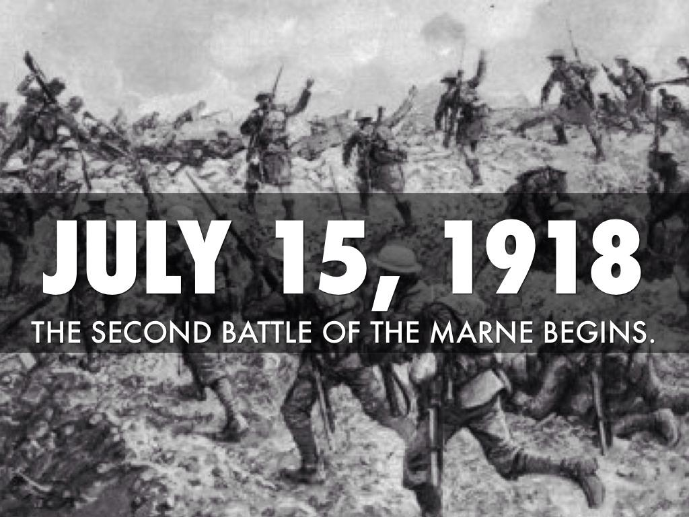 Fifty-two divisions, 600 guns, and a thousand field batteries attack an Allied force of 68 French, American, British and Italian divisions with 400 heavy guns, 360 field batteries and, most importantly, 346 tanks. The addition of the British Corps and the 85,000 fresh American doughboys turns the tide. 600 Americans are killed by the German’s three-hour artillery barrage launching the first day of the battle, including Pvt. Guss Peery, 30th IR, 3rd ID, who is buried at Oisne-Aisne American Cemetery On July 15th the Second Battle of the Marne started. The start of the collapse of the German Army. July 15-17, 1918 – The last German offensive of the war, the Marne-Reims Offensive, begins with a two-pronged attack around Reims, France, by 52 divisions. The Allies have been anticipating this battle and lie in wait. The German attack to the east of Reims is crushed that day by the French. To the west of Reims, the advance is blocked by the U.S. 3rd Infantry Division, followed by a successful French and American counter-attack. SNEAK PREVIEW — 17 JULY THE HUNDRED LAST DAYS: EVENTS LEADING UP TO 11/11/18 THE END OF THE ROMANOVS 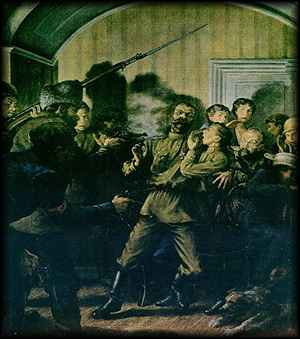 Execution of the Romanovs at the Ipatiev House July 17, 1918 – Russian Bolsheviks murder former Czar Nicholas and his entire family. By now, an all-out civil war has erupted in Russia that features indiscriminate killings of civilians and captured fighters. Amid the chaos, disease and starvation envelop Russia. The fighting between Bolsheviks and their opponents will last three years, ending with a Bolshevik victory amid a Russian death toll estimated at 15 million persons. SNEAK PREVIEW — 18 JULY THE HUNDRED LAST DAYS: EVENTS LEADING UP TO 11/11/18 THE TIDE TURNS 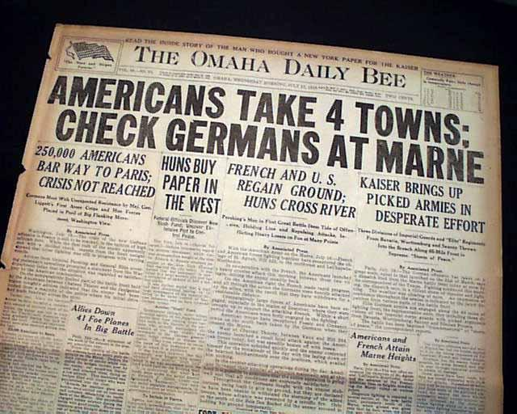 Americans at home followed the War closely The combined French and American attack along the Marne begun on 18 July, 1918 continues — marking the first in a series of coordinated Allied counter-offensives on the Western Front. Three French armies accompanied by five American divisions cross the Marne River. July 18, 1918 – A combined French and American attack along the Marne marks the first in a series of coordinated Allied counter-offensives on the Western Front. Three French armies accompanied by five American divisions cross the Marne River. In the face of this assault, the German 7th and 9th Armies begin a withdrawal from the Marne. SNEAK PREVIEW — 20 JULY THE HUNDRED LAST DAYS: EVENTS LEADING UP TO 11/11/18 GERMAN FORCES RETREAT ACROSS THE MARNE
Germans in retreat, Western Front In the face of this assault, the German 7th and 9th Armies begin an orderly withdrawal from the Marne. Losses are heavy on both sides but the Germans are definitely on the defensive and retreating. Total American dead and wounded were 12,000 in the three week battle. Near the end of the battle Pvt. Franklin Peery, 4th IR, 3rd ID, was killed in combat. He is buried at Aisne-Marne American Cemetery.
“A French Highway”, by John Northcote Nash (1893-1977), Imperial War Museum SNEAK PREVIEW — 23 JULY THE HUNDRED LAST DAYS: EVENTS LEADING UP TO 11/11/18 BATTLE OF SOISSONS/OURCQ 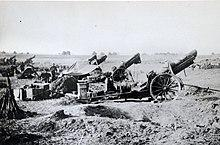 French Artillery on the Western front Part of the Second Battle of the Marne Allied Supreme Commander orders an attack to drive back the German salient threatening Paris. He sends 24 French, 2 British and 2 American divisions with 478 tanks against a smaller German army. The Americans suffer 12,000 casualties, the French 95,000, the Germans 167,000. Adolf Hitler earned and is awarded an Iron Cross First Class for bravery. SNEAK PREVIEW — 2 AUGUST THE HUNDRED LAST DAYS: EVENTS LEADING UP TO 11/11/18 END OF THE BATTLE OF SOISSONS/OURCQ 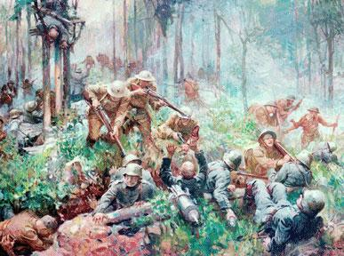 “American Casualties of War”, unknown artist The battle ended with the French having recaptured most of the territory the Germans had captured in their Spring 1918 offensive. The Americans suffer 12,000 casualties, the French 95,000, the Germans 167,000. Adolf Hitler earned and is awarded an Iron Cross First Class for bravery.
|